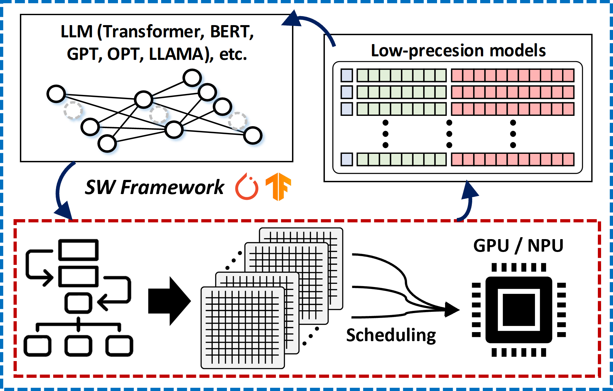
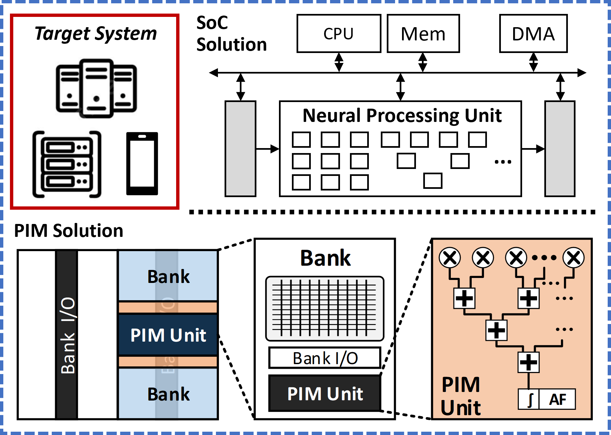
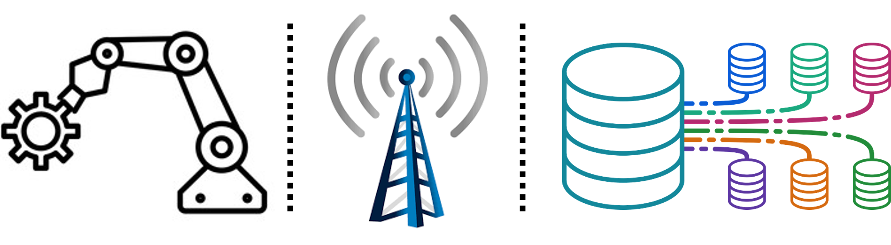

Research
Key Research Direction: Intelligent System Design with Interdisciplinary Study

Our research spans domain-specific hardware design, hardware-software co-optimization, and full-stack AI acceleration.
- Designing future domain-specific accelerators
- Covering from high-level system architecture to digital logic design to maximize the system efficiency
- Software-hardware co-design, hardware-friendly algorithm development
Full-Stack Optimization for AI Acceleration
Details →ML for System (Algorithm-Hardware Co-Design)

- Algorithm-based studies for future AI applications
- Developing hardware-friendly software optimizations
- Quantization (Compression) / Low-precision computing
- Sparsity / Pruning
- Approximate computing - Reducing the burden of computational complexity for the system architecture
System for ML (Accelerator Architectures)

- Computer architecture
- System-on-Chip (SoC) architecture design
- Dedicated computing core (processing units, ALU, etc.) design - Computing platforms for near-memory processing, processing-in-memory (PIM), etc.
Domain-Specific Accelerator Design
Details →AI Accelerator Design

- Area-, power-, energy-efficient hardware logic designs
- FPGA prototyping, microarchitecture design for specific AI algorithms
- Digital integrated circuit design and chip fabrication
Dedicated Hardware Design for Various Domains

- Robotics
- Communications
- Database